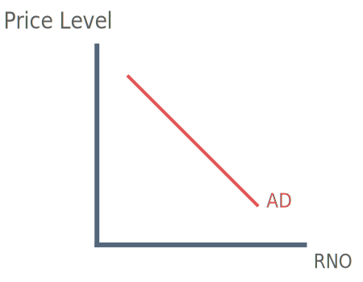
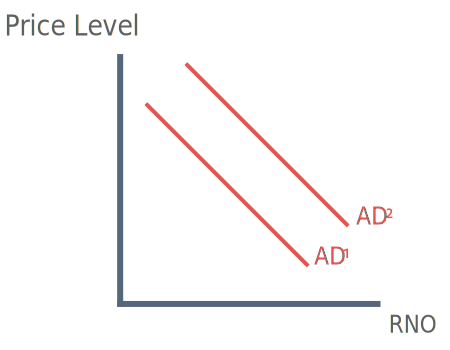

What is aggregate demand?
Aggregate demand also referred to as AD is the total demand for goods and services in an economy at a given time. AD consists of consumer spending by house holds, capital investment, government spending and exports (X) minus imports (M). It is simplified by the formula below.
Formula for Aggregate Demand
Aggregate Demand (AD) = C + I + G + (X-M)
C = Consumer Spending
I = Investment
G = Government Spending
X = Exports
M = Imports
Aggregate Demand Curve

The aggregate demand curve slopes downwards from left to right so as the price level falls real national output increases, this is for a number of reasons.
1. At a lower price level, consumers have higher disposable income and therefore spend more
2. As the price level lowers, UK goods will become cheaper, leading to higher exports, whilst imports become more expensive
3. At a lower price level, interest rates often fall. Lower interest rates result in higher level of borrowing for investment and spending in the economy.
Shifts of the aggregate demand curve

1) Increased Confidence
Stability in the economy will allow consumers and businesses to plan spending, this will lead to an increase in confidence in the economy thus encouraging consumers to spend (C) and businesses to invest (I).
2) Changes in Fiscal Policy
Fiscal policy involves government expenditure and taxation. A change in the budget may lead to higher government spending (G) in the economy, this provides an injection into the economic cycle and shifts the AD outwards.
3) Changes in Monetary Policy
Monetary policy involves the manipulation of the interst rate. A fall in the interest rate makes borrowing cheaper and therefore stimulates spending (C) and investment (I). This in turn shifts the AD curve outwards.
4) Exchange Rates
When a country's exchange rate depreciates it's exports become relatively cheaper and imports relatively more expensive in comparison to other countries. Exports (X) therefore increase, shifting the AD curve outwards.
5) Expectations
Businesses and consumer both have certain expectation of the future, this may directly affect aggregate demand.
For example, if businesses expect interest rates to rise in the future they may conduct borrowing and spending sooner rather than later so they avoid higher rates of interest repayments.